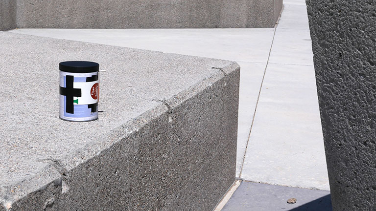
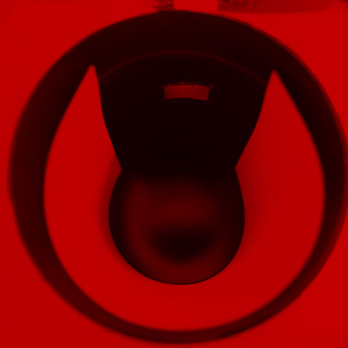

Now comes the fun part: making your first image. Getting a proper exposure depends on many things, and it is easy to get lost in theory. There will also be some trial-and-error, as well as happy accidents. Remember, one of the reasons to photograph this way is to let go of control and let serendipity do its magic. There is no right and wrong. Sometimes the worst “mistakes” accidentally result in the most magical images.

Before we begin, we must obtain photo paper for our negative. Any type of photo paper can do, however I seem to get the best results with Ilford Multigrain in Pear or Satin. You can get them at Freestyle Photo or B&H. Depending on the size of your camera, you can purchase it in 5x7 size, or you can get in in 8x10 and cut it down to fit in the camera.
Photo paper is sensitive to light, which means you need a dark place to take it out of the box and load it in the camera. A bathroom is a good place for this. You can do this at night, or block out the windows completely to keep all of the light out. Photo paper is very slow, which meand you don't need to be in absolute darkness. However, so you can see what you're doing, you will need a safelight. This is a red light, since photo paper is not sensitive to red. I recommend this one from Freestyle Photo.
In the darkroom and with only the safelight on, remove a sheet of photo paper from the box and insert in in the camera, as shown in the image below. If the paper is taller than the camera, use scissors to cut of the extra.
An f number is the proportion of the hole diameter to the distance to the negative, and is an important number because you will use it to determine exposure times. To calculate yours, we will be assuming a pinhole diameter of 0.016” for a #12 sewing needle we previously used.
Using a ruler, measure the diameter of your container. This is your focal length. You can now find your F number by dividing the diameter in inches by 0.016.The table below shows the F number for most sizes.
| Container Diameter | f/Number |
|---|---|
| 2.5 in | f156 |
| 3 in | f188 |
| 3.5 in | f219 |
| 4 in | f250 |
| 4.5 in | f282 |
| 5 in | f313 |
| 5.5 in | f344 |
| 6 in | f375 |
With our f-number in hand, we can now calculate our exposure times. This is no different than doing so with a regular camera: We take a light reading with a light meter and determine the aperture and shutter speed. Except with a pinhole camera, our aperture is fixed (your f-number).
To calculate the exposure time, we will assign a “film speed” to our photo paper. It is no different than film and works exactly the same way. The main difference is, photo paper is very slow, about 6 or 7 stops slower than film, or an ISO of 3 or 6. For our purposes we will use ISO 6. Now we can take a light reading, and simply adjust our numbers 6 stops down, and that gives us our exposure time:
To use the table above, take a reading with your light meter for a scene set to f/16 and ISO 400, and find the column matching the corresponding shutter speed. Then, find the exposure time in the row matching your camera's f/number. If you don't have a meter, use the reference at the top of the columns. Keep in mind, this is just a guide. The lack of precision is a feature, not a bug!
No comes the exciting part. Go forth and photograph!
How can I take more than one picture at a time? Make more cameras! Experiment with different diameters, shapes and paper placements. Each camera imprints its own personality on the images.
Can I use a tripod? Of course! Purchase a 1/4 inch T-Nut and epoxy it to the camera, so you can screw it on any standard tripod.
Once you're done, it's time to develop your negative.
Can I use film? Yes you can. However, exposure times will be much faster and you must incorporate a reciprocity failure factor to your exposure times, and develop in a darkroom with film developer. Use this guide to determine your exposure times, and find the reciprocity factor for your film. For example you can find the Ilford data here. If you cannot find specific film, use a factor of 1.3 as a starting point.